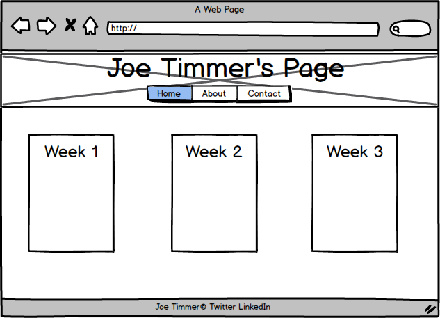

Wireframing my Github Site

Website Roadmap
- Add home, about, and contact pages to each header including the actual pages
- Create 3 divs or something else for a 3 column page, each for a week's work
- Add facebook and linkedin icons to footer
- When hovering over link, make the page dark
- When on page, make that link dark
- Revise fonts
- Create scalable, responsive content that is good for tablet, laptop, and phone
- Fix header font scaling issue
- Revise html with html5 organization